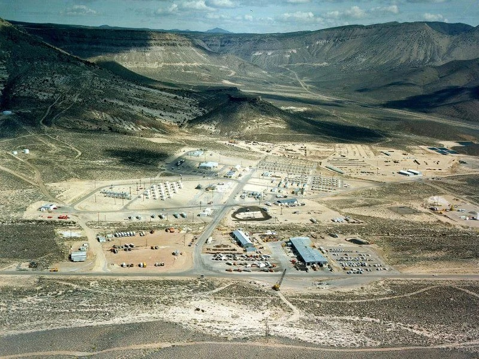

Военная база, удалённое подразделение военно-воздушной базы Эдвардс. Расположена в США на юге штата Невада, в 133 км к северо-западу от Лас-Вегаса, на южном берегу сухого солёного озера Грум-Лейк. Предположительно, используется для экспериментальных тестов в области воздухоплавания и систем вооружения. Воздушное сообщение над Зоной 51 запрещено.
